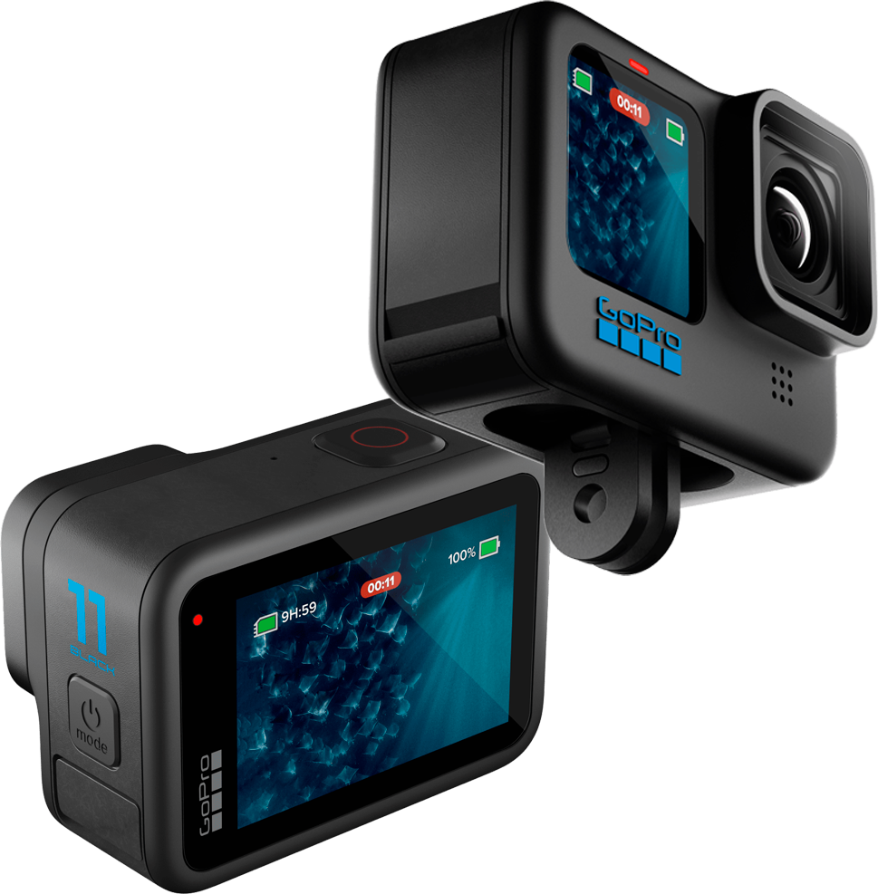
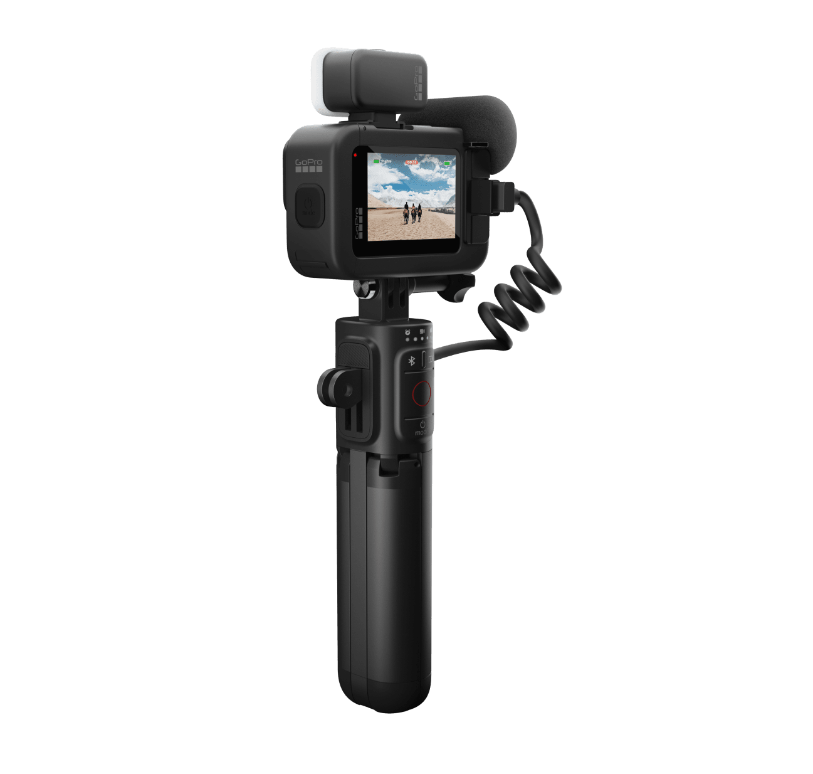
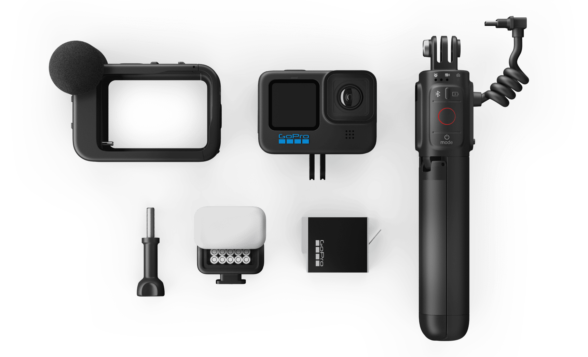
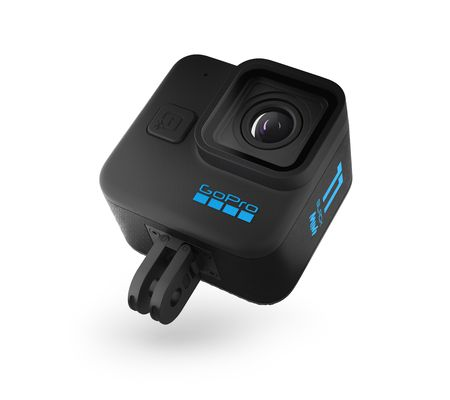

La caméra la plus polyvalente porte désormais le numéro 11.
Hero 11 Black

Le nouveau capteur 1/1,9″ permet de capturer plus d’un milliard de couleurs en vidéo
couleur 10 bits. Avec une résolution maximale de 5,3K à 60 images par seconde et des
photos de 27 mégapixels sur la HERO11 Black. Il en résulte 64X plus de couleurs capturées
en vidéo 10 bits par rapport aux 16,7 millions de couleurs en 8 bits, un bond en avant
dans la qualité d’image par rapport aux caméras GoPro précédentes.
La technologie HyperSmooth 5.0, avec le verrouillage Horizon 360 degrés intégré à la
caméra pour que vos images restent stables, même si votre caméra effectue une rotation
de 360 degrés pendant la capture.
Le nouvel objectif numérique HyperView hyper-immersif offre le plus grand angle 16:9
jamais produit en natif dans une caméra HERO. Il est destiné à la capture de points de
vue de haute action. De plus, le SuperView, signature de GoPro, est désormais disponible
en 5,3K60 et 4K120.
Trois nouveaux préréglages Time Lapse à effet nocturne qui facilitent la capture de
traînées d’étoiles, de peintures lumineuses et de traînées lumineuses de véhicules
de qualité professionnelle.
TimeWarp 3.0 capture désormais à 5,3K, soit un bond impressionnant de 91 % en résolution
par rapport à la 4K et de 665 % par rapport à la 1080p.
Contrôle simplifié de la caméra avec les modes Easy et Pro. Les commandes Easy facilitent
plus que jamais l’enregistrement dans le meilleur réglage pour chaque situation, tandis
que les commandes Pro déverrouillent chaque aspect de votre caméra HERO11 pour un contrôle
créatif maximal.
La batterie Enduro améliore considérablement les performances de la caméra par temps froid
et modéré, prolongeant la durée d’enregistrement jusqu’à 38 % sur la HERO11 Black.
La batterie Enduro est fournie dans la boîte de la HERO11 Black et de la HERO11 Black
Creator Edition, ainsi que sous forme de batterie Enduro intégrée dans la HERO11
Black Mini.
Gopro Hero 11 Black EditionCreator


La HERO11 Black Creator Edition comprend quant à elle des accessoires
supplémentaires. Poignée Volta, Module d’éclairage, Module médias, Batterie Enduro
Gopro hero 11 mini

La Gopro Hero 11 Black Mini dispose des mêmes performances vidéo que
notre caméra vedette de plus elle est plus compact, plus léger et plus simple à
utiliser. La caméra est plus pratique et plus facile à fixer à votre équipement.